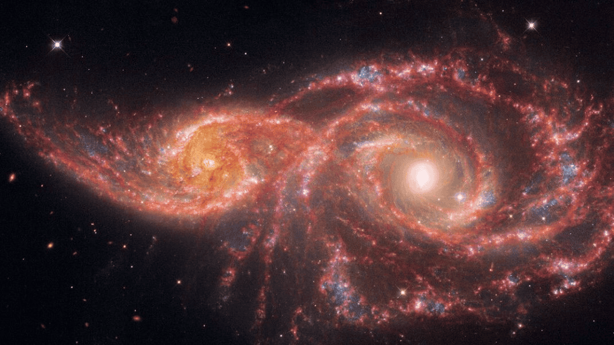
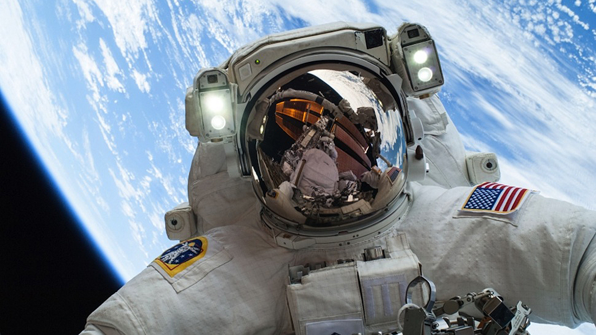

Exploração do Espaço
Explore as missões tripuladas rumo à Lua, Marte e aos confins do nosso sistema solar.
Conhecer as MissõesSobre o Espaço
Curiosidades, história, entre outros.
A exploração do espaço começou a mudar para sempre em 1609, quando Galileu Galilei apontou sua luneta para o céu e revelou crateras na Lua e luas ao redor de Júpiter, mas a verdadeira corrida espacial decolou séculos depois, durante a Guerra Fria, quando a União Soviética lançou o Sputnik 1 em 1957, o primeiro satélite artificial da história, seguido pelo voo histórico de Yuri Gagarin em 1961, o primeiro ser humano a orbitar a Terra, culminando na chegada dos Estados Unidos à Lua com a missão Apollo 11 em 1969, liderada por Neil Armstrong. Esse legado tecnológico evoluiu para a Estação Espacial Internacional (ISS), um laboratório em órbita onde astronautas vivem e trabalham há mais de duas décadas, e se expande hoje com telescópios ultraprecisos como o James Webb, capaz de capturar a luz das primeiras galáxias do universo. Em meio a essa imensidão, o cosmos guarda curiosidades fascinantes: o espaço é completamente silencioso porque o vácuo não tem moléculas de ar para transportar o som; as pegadas deixadas pelos astronautas na Lua vão durar milhões de anos, pois não há atmosfera, vento ou chuva para apagá-las; além disso, Vênus gira tão devagar que um dia por lá dura mais tempo que um ano inteiro em sua órbita ao redor do Sol, enquanto uma única colher de chá de matéria de uma estrela de nêutrons pesaria cerca de seis bilhões de toneladas na Terra.
